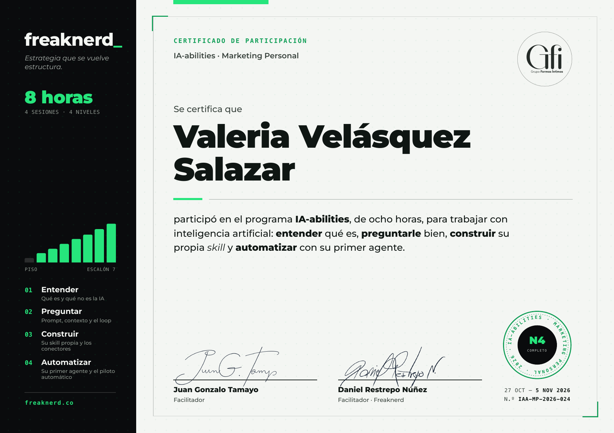

Valeria Velásquez Salazar
Participó en IA-abilities · Marketing Personal, ocho horas para trabajar con inteligencia artificial: entender qué es, preguntarle bien, construir su propia skill y automatizar con su primer agente.

Participó en IA-abilities · Marketing Personal, ocho horas para trabajar con inteligencia artificial: entender qué es, preguntarle bien, construir su propia skill y automatizar con su primer agente.
